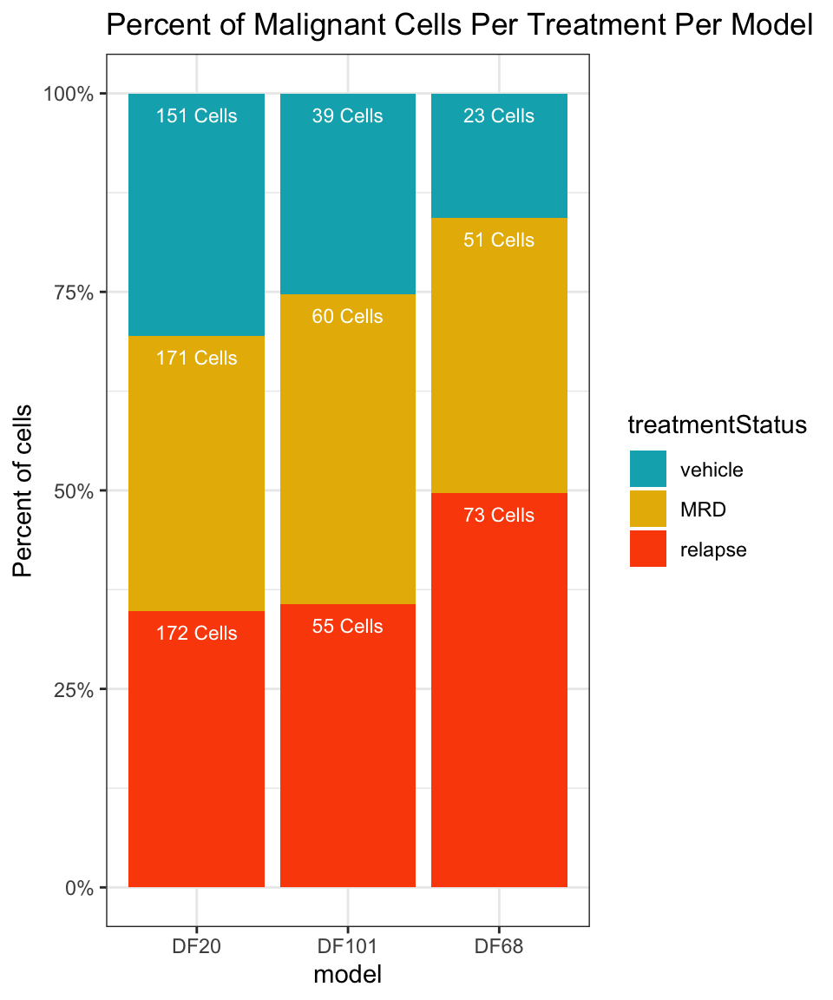
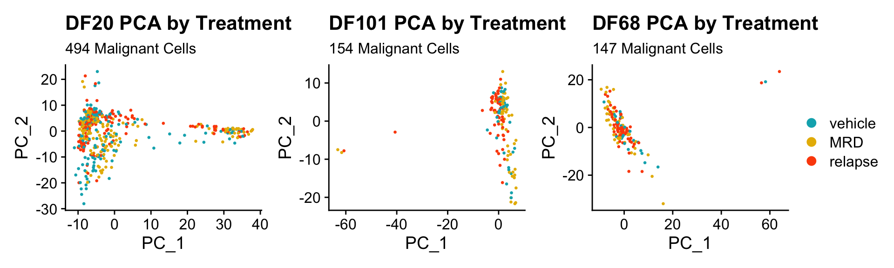
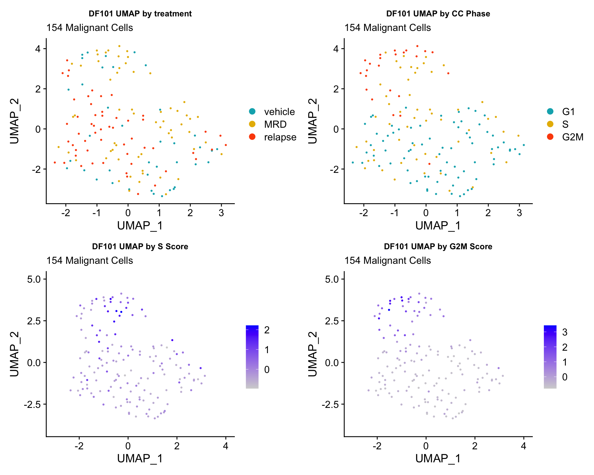
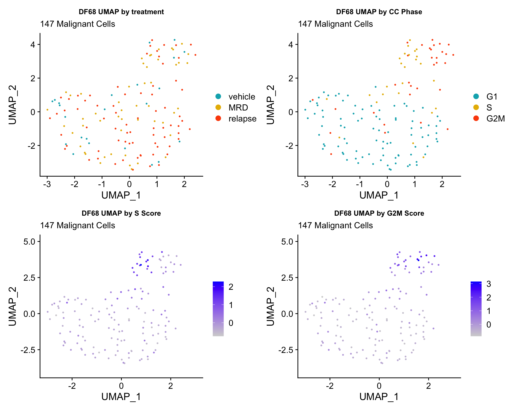

Izar 2020 PDX (Cohort 3) Exploratory Analysis
Jesslyn Goh and Mike Cuoco
7/20/2020
Last updated: 2020-07-30
Checks: 6 1
Knit directory: jesslyn_ovca/analysis/
This reproducible R Markdown analysis was created with workflowr (version 1.6.2). The Checks tab describes the reproducibility checks that were applied when the results were created. The Past versions tab lists the development history.
The R Markdown is untracked by Git. To know which version of the R Markdown file created these results, you’ll want to first commit it to the Git repo. If you’re still working on the analysis, you can ignore this warning. When you’re finished, you can run wflow_publish to commit the R Markdown file and build the HTML.
Great job! The global environment was empty. Objects defined in the global environment can affect the analysis in your R Markdown file in unknown ways. For reproduciblity it’s best to always run the code in an empty environment.
The command set.seed(20200713) was run prior to running the code in the R Markdown file. Setting a seed ensures that any results that rely on randomness, e.g. subsampling or permutations, are reproducible.
Great job! Recording the operating system, R version, and package versions is critical for reproducibility.
Nice! There were no cached chunks for this analysis, so you can be confident that you successfully produced the results during this run.
Great job! Using relative paths to the files within your workflowr project makes it easier to run your code on other machines.
Great! You are using Git for version control. Tracking code development and connecting the code version to the results is critical for reproducibility.
The results in this page were generated with repository version 6be6c85. See the Past versions tab to see a history of the changes made to the R Markdown and HTML files.
Note that you need to be careful to ensure that all relevant files for the analysis have been committed to Git prior to generating the results (you can use wflow_publish or wflow_git_commit). workflowr only checks the R Markdown file, but you know if there are other scripts or data files that it depends on. Below is the status of the Git repository when the results were generated:
Ignored files:
Ignored: .DS_Store
Ignored: .Rhistory
Ignored: .Rproj.user/
Ignored: analysis/.DS_Store
Ignored: code/.DS_Store
Ignored: data/.DS_Store
Ignored: data/HTAPP/
Ignored: data/Izar_2020/
Ignored: data/gene_lists/.DS_Store
Ignored: data/gene_lists/extra/.DS_Store
Ignored: jesslyn_plots/
Ignored: mike_plots/
Ignored: old/.DS_Store
Ignored: old/edited/.DS_Store
Ignored: renv/.DS_Store
Ignored: renv/library/
Ignored: renv/python/
Ignored: renv/staging/
Ignored: vignettes/
Untracked files:
Untracked: analysis/03.0_Izar2020_PDX_ExploratoryAnalysis.Rmd
Untracked: analysis/03.2_Izar2020_PDX_CellCycleAnalysis.Rmd
Untracked: data/gene_lists/upr.txt
Unstaged changes:
Modified: analysis/02.1_Izar2020_SS2_DEAnalysis.Rmd
Modified: analysis/03.1_Izar2020_PDX_DEAnalysis.Rmd
Modified: analysis/index.Rmd
Modified: code/loadNupdateHm.R
Modified: code/read_Izar_2020.R
Modified: old/edited/02_Izar2020_SS2_Load_Plots.Rmd
Modified: old/edited/03_Izar2020_PDX_Load.Rmd
Note that any generated files, e.g. HTML, png, CSS, etc., are not included in this status report because it is ok for generated content to have uncommitted changes.
There are no past versions. Publish this analysis with wflow_publish() to start tracking its development.
IZAR 2020 PDX (COHORT 3) DATA DIFFERANTIAL EXPRESISON ANALYSIS
OVERVIEW
- The PDX data from Izar2020 consists of only Malignant cells from three HGSOC PDX models derived from patients with different treatment histories were selected for implantation:
- DF20 (BRCA WT treatment-naive, clinically platinum sensitive)
- DF101 (BRCA1 mutant, 2 lines of prior therapy, clinically platinum resistant)
- DF68 (BRCA1 mutant, 6 lines of prior therapy, clinically platinum resistant)
- After tumors were established, animals were divided into two groups per model:
- Vehicle (treated with DMSO)
- Carboplatin (treated with IP carboplatin)
- Carboplatin-treated mice for minimal residual disease (MRD) group were harvested for scRNA-seq
- The remaining carboplatin-treated mice were harvested at endpoint (vehicle)
- In our 5-part analysis of the Izar 2020 PDX data, we are interested in identifying differentially expressed genes and hallmark genesets between treatment statuses within each model.
- We split our PDX analysis into three parts:
- Load Data and Create PDX Seurat Object
- The code to this part of our analysis is in the read_Izar_2020.R file in the code folder. During this part of our analysis we:
- Load in PDX count matrix and Create Seurat Object
- Assign Metadata identities including:
- Mouse ID
- Model ID
- Treatment Status
- Score cells for cell cycle and hallmark genesets - Note: It does not matter whether we call AddModuleScore before or after subsetting and scaling each model because AddModuleScore uses the data slot.
- Save Seurat Object
- The code to this part of our analysis is in the read_Izar_2020.R file in the code folder. During this part of our analysis we:
- Process Data and Exploratory Data Analysis
- The code to this part of our analysis can be found in the 03_Izar2020_PDX_Load file in the old/edited folder. During this part of our analysis we:
- Load in PDX Seurat Object from Part 1 and subset by model. Continue analysis separately for each model.
- Scale and FindVariableFeatures (prepares data for dimensionality reduction)
- Dimensionality Reduction (PCA + UMAP)
- Save Seurat Objects
- The code to this part of our analysis can be found in the 03_Izar2020_PDX_Load file in the old/edited folder. During this part of our analysis we:
- Exploratory Data Analysis
- The code to this part of our analysis can be found in the 03.0_Izar2020_PDX_Exploratory Analysis file in the analysis folder. During this part of our analysis we:
- Load in PDX Seurat Object from Part 2. Analyze separately for each model.
- Compute summary metrics for PDX data such as:
- Number of cells per model per treatment
- Number of cells per treatment per cell cycle phase
- Visualize how cells separate based on metadata identities via UMAP - Intermodel heterogeneity: How do cells separate by model? - Intramodel heterogeneity:
- How do cells separate by treament status?
- How do cells separate by cell cycle phase?
- The code to this part of our analysis can be found in the 03.0_Izar2020_PDX_Exploratory Analysis file in the analysis folder. During this part of our analysis we:
- DE Analysis
- TYPE #1 DE ANALYSIS: Visualizing and Quantifying Differentially Expression on Predefined GO Genesets
- Violin Plots and UMAP
- Gene Set Enrichment Analysis (GSEA)
- TYPE #2 DE ANALYSIS: Finding DE Genes from scratch
- Volcano Plots
- TYPE #1 DE ANALYSIS: Visualizing and Quantifying Differentially Expression on Predefined GO Genesets
- CELL CYCLE ANALYSIS
- TYPE #1 CELL CYCLE ANALYSIS: Examine correlation between treatment condition and cell cycle phase
- Evaluate the idea that cell cycle might influence expression of signatures
- Load Data and Create PDX Seurat Object
This is the third part of our 5-part analysis of the Izar 2020 PDX (Cohort 3) data.
STEP 1 LOAD IN SEURAT OBJECTS AND GENESETS
# Load packages
source(here::here('packages.R'))
#Read in PDX RDS object
PDX_All = readRDS("data/Izar_2020/test/jesslyn_PDX_All_processed.RDS")
PDX_DF20 = readRDS("data/Izar_2020/test/jesslyn_PDX_DF20_processed.RDS")
PDX_DF101 = readRDS("data/Izar_2020/test/jesslyn_PDX_DF101_processed.RDS")
PDX_DF68 = readRDS("data/Izar_2020/test/jesslyn_PDX_DF68_processed.RDS")
#Read in hallmarks of interest
hallmark_names = read_lines("data/gene_lists/hallmarks.txt")
hallmark.list <- vector(mode = "list", length = length(hallmark_names) + 4)
names(hallmark.list) <- c(hallmark_names, "GO.OXPHOS", "KEGG.OXPHOS", "UNUPDATED.OXPHOS", "UNUPDATED.UPR")
for(hm in hallmark_names){
file <- read_lines(glue("data/gene_lists/hallmarks/{hm}_updated.txt"), skip = 1)
hallmark.list[[hm]] <- file
}
hallmark.list[["GO.OXPHOS"]] <- read_lines("data/gene_lists/extra/GO.OXPHOS.txt", skip = 1)
hallmark.list[["KEGG.OXPHOS"]] <- read_lines("data/gene_lists/extra/KEGG.OXPHOS.txt", skip = 2)
hallmark.list[["UNUPDATED.OXPHOS"]] <- read_lines("data/gene_lists/oxphos.txt", skip =1)
hallmark.list[["UNUPDATED.UPR"]] <- read_lines("data/gene_lists/upr.txt", skip =1)
#center module and cell cycle scores and reassign to the metadata of each Seurat object
hm.names <- names(PDX_All@meta.data)[9:48]
for(i in hm.names){
DF20.hm.centered <- scale(PDX_DF20[[i]], center = TRUE, scale = FALSE)
PDX_DF20 <- AddMetaData(PDX_DF20, DF20.hm.centered, col.name = glue("{i}.centered"))
DF101.hm.centered <- scale(PDX_DF101[[i]], center = TRUE, scale = FALSE)
PDX_DF101 <- AddMetaData(PDX_DF101, DF101.hm.centered, col.name = glue("{i}.centered"))
DF68.hm.centered <- scale(PDX_DF68[[i]], center = TRUE, scale = FALSE)
PDX_DF68 <- AddMetaData(PDX_DF68, DF68.hm.centered, col.name = glue("{i}.centered"))
}STEP 2 EXAMINE SUMMARY METRICS
#number of cells in each treatment level in each model
numCellsPerTreatmentPerModel = table(PDX_All$treatment.status, PDX_All$model_ID)
numCellsPerTreatmentPerModel %>%
as.data.frame() %>%
dplyr::rename(treatmentStatus = Var1, model = Var2, numCells = Freq) %>%
ggplot(aes(x=model, fill=treatmentStatus, y=numCells)) +
geom_bar(stat="identity", position="fill") + labs(fill = "treatmentStatus", x = "model") +
geom_text(aes(label = numCells), position = "fill", hjust = 0.5, vjust = 2, size = 3, color = "white") +
labs(title = "Number of Cells Per Treatment Per Model")
The summary metrics of each model shows us how little cells we have in each sample, and in each treatment condition. We therefore have to keep in mind that the results we get from this small sample of cells may not be representative of the true population.
STEP 3 UMAP & PCA VISUALIZATIONS
We are interested in finding out how cells cluster together. This helps us qualitatively understand what may be driving their differential expression (if any). We are specifically interested seeing if cells cluster due to these metadata identities: 1. Intermodel heterogeneity: Do separate by model? 2. Intramodel heterogeneity: a. Do cells separate by treatment status? b. Do cells separate by cell cycle phase? c. Do cells separate due to nFeature and nCount? d. Do cells separate by OXPHOS or UPR hallmark scores?
1) BY MODEL
UMAPPlot(PDX_All, group.by = "model_ID") + labs(title = "PDX UMAP by Model", subtitle = paste("Number of Cells:", nrow(PDX_All@meta.data)))* PDX data separates by model very well.
2) BY TREATMENT STATUS WITHIN EACH MODEL
DF20.byt <- UMAPPlot(PDX_DF20, group.by = "treatment.status") + labs(title = "DF20 UMAP by Treatment", subtitle = paste("Number of Cells:", nrow(PDX_DF20@meta.data)))
DF101.byt <- UMAPPlot(PDX_DF101, group.by = "treatment.status") + labs(title = "DF101 UMAP by Treatment", subtitle = paste("Number of Cells:", nrow(PDX_DF20@meta.data)))
DF68.byt <- UMAPPlot(PDX_DF68, group.by = "treatment.status") + labs(title = "DF68 UMAP by Treatment", subtitle = paste("Number of Cells:", nrow(PDX_DF20@meta.data)))
DF20.byt + DF101.byt + DF68.bytDF20.pca.byt <- PCAPlot(PDX_DF20, group.by = "treatment.status") + labs(title = "DF20 PCA by Treatment", subtitle = paste("Number of Cells:", nrow(PDX_DF20@meta.data)))
DF101.pca.byt <- PCAPlot(PDX_DF101, group.by ="treatment.status") + labs(title = "DF101 PCA by Treatment", subtitle = paste("Number of Cells:", nrow(PDX_DF20@meta.data)))
DF68.pca.byt <- PCAPlot(PDX_DF68, group.by = "treatment.status") + labs(title = "DF68 PCA by Treatment", subtitle = paste("Number of Cells:", nrow(PDX_DF20@meta.data)))
DF20.pca.byt + DF101.pca.byt + DF68.pca.byt
- Seems like cells do not cluster together by treatment status.
- Treatment status is also not captured in PC_1 or PC_2
3) BY UPR AND OXPHOS GENESET SCORE
hms.centered <- c("UNUPDATED.OXPHOS37.centered", "UNUPDATED.UPR38.centered")
#UMAP
PDX.names <- c("DF20", "DF101", "DF68")
PDXs <- c(PDX_DF20, PDX_DF101, PDX_DF68)
UMAP.plots <- vector("list", length(PDXs))
names(UMAP.plots) <- PDX.names
for (i in 1:length(PDXs)){
obj <- PDX.names[[i]]
numCells = nrow(PDXs[[i]]@meta.data)
umap <- UMAPPlot(PDXs[[i]], group.by = "treatment.status") +
labs(title = glue("{obj} UMAP by Treatment"), subtitle = glue("Number of cells in {obj}: {numCells}"))+
theme(plot.subtitle = element_text(size = 8))
p <- FeaturePlot(PDXs[[i]], features = hms.centered, combine = FALSE)
p[[1]] <- p[[1]] + labs(title = glue("{obj} UMAP by Oxphos Scores"))
p[[2]] <- p[[2]] + labs(title = glue("{obj} UMAP by UPR Scores"))
UMAP.plots[[obj]] <- umap + p[[1]] + p[[2]]
}
UMAP.plots[["DF20"]]
UMAP.plots[["DF101"]]
UMAP.plots[["DF68"]] * Since cells do not separate by treatment status, it is difficult to determine whether there is a correlation between treatment condition and hallmark scores based on our UMAP visualization. * We therefore try to visualize DE hallmark scores across treatment conditions with VlnPlots
* Since cells do not separate by treatment status, it is difficult to determine whether there is a correlation between treatment condition and hallmark scores based on our UMAP visualization. * We therefore try to visualize DE hallmark scores across treatment conditions with VlnPlots
4) BY CELL CYCLE PHASE AND BY nFEATURE/ nCOUNT
#UMAP -------------------------
ccUMAP.plots <- vector("list", length = 3)
names(ccUMAP.plots) <- c("DF20", "DF101", "DF68")
for(i in 1:length(PDXs)){
obj = PDXs[[i]]
name = PDX.names[[i]]
numCells = nrow(obj@meta.data)
obj$Phase <- factor(obj$Phase, levels = c("G1", "S", "G2M"))
byt <- UMAPPlot(obj, group.by = "treatment.status") +
labs(title = glue("{name} UMAP by treatment"), subtitle = glue("Number of cells in {name}: {numCells}")) +
theme(plot.title = element_text(hjust = 0.5))
bycc <- UMAPPlot(obj, group.by = "Phase") +
labs(title = glue("{name} UMAP by CellCycle Phase")) +
theme(plot.title = element_text(hjust = 0.5))
byscore <- FeaturePlot(obj, features = c("S.Score.centered", "G2M.Score.centered"), combine = FALSE)
byscore[[1]] <- byscore[[1]] + labs(title = glue("{name} UMAP by S Score"))
byscore[[2]] <- byscore[[2]] + labs(title = glue("{name} UMAP by G2M Score"))
ccUMAP.plots[[i]] <- byt + bycc + byscore[[1]] + byscore[[2]]
}
ccUMAP.plots[["DF20"]]ccUMAP.plots[["DF101"]]
ccUMAP.plots[["DF68"]]
#PCA -------------------- (PCA separates cell by cell cycle really well)
ccPCA.plots <- vector("list", length = 3)
names(ccPCA.plots) <- c("DF20", "DF101", "DF68")
for(i in 1:length(PDXs)){
obj = PDXs[[i]]
name = PDX.names[[i]]
numCells = nrow(obj@meta.data)
obj$Phase <- factor(obj$Phase, levels = c("G1", "S", "G2M"))
byt <- PCAPlot(obj, group.by = "treatment.status") +
labs(title = glue("{name} PCA by treatment"), subtitle = glue("Number of cells in {name}: {numCells}")) +
theme(plot.title = element_text(hjust = 0.5))
bycc <- PCAPlot(obj, group.by = "Phase") +
labs(title = glue("{name} PCA by CellCycle Phase")) +
theme(plot.title = element_text(hjust = 0.5))
byscore <- FeaturePlot(obj, features = c("S.Score.centered", "G2M.Score.centered"), reduction = "pca",combine = FALSE)
byscore[[1]] <- byscore[[1]] + labs(title = glue("{name} PCA by centered S Score"))
byscore[[2]] <- byscore[[2]] + labs(title = glue("{name} PCA by centered G2M Score"))
bynFnC <- FeaturePlot(obj, features = c("nCount_RNA", "nFeature_RNA"), reduction = "pca", combine = FALSE)
bynFnC[[1]] <- bynFnC[[1]] + labs(title = glue("{name} PCA by nCount"))
bynFnC[[2]] <- bynFnC[[2]] + labs(title = glue("{name} PCA by nFeature"))
ccPCA.plots[[i]] <- byt + bycc + byscore[[1]] + byscore[[2]] + bynFnC[[1]] + bynFnC[[2]]
}
ccPCA.plots[["DF20"]]
ccPCA.plots[["DF101"]]
ccPCA.plots[["DF68"]]
- OBSERVATIONS
- Although it doesn’t seem like the cells cluster by treatment condition within each model, it does seem like cells in the same cell cycle phase, especially those with higher S or G2M scores tend to be near each other on UMAP space. We visualized how cells cluster by cell cycle using both UMAP and PCA because PCA is known to cluster cells well by cell cycle.
- Looking at the PCA plots, we see that:
- PC_2 captures Cell Cycle Phase, S.Score and G2M scores, as cells in the same phase or have high S or G2M scores are found to be near each other on the PC_2 Axis.
- PC_1 captures nCount and nFeature variation, as cells with higher nCount and nFeature values are near each other on the PC_1 Axis.
- However, it is hard to tell whether there is a correlation between treatment condition and cell cycle phase / score based on these plots.
- Although it doesn’t seem like the cells cluster by treatment condition within each model, it does seem like cells in the same cell cycle phase, especially those with higher S or G2M scores tend to be near each other on UMAP space. We visualized how cells cluster by cell cycle using both UMAP and PCA because PCA is known to cluster cells well by cell cycle.
We will investigate further into the correlation between treatment status, hallmark scores, and cell cycle phase in the next sections.
sessionInfo()R version 4.0.2 (2020-06-22)
Platform: x86_64-apple-darwin17.0 (64-bit)
Running under: macOS Mojave 10.14.6
Matrix products: default
BLAS: /Library/Frameworks/R.framework/Versions/4.0/Resources/lib/libRblas.dylib
LAPACK: /Library/Frameworks/R.framework/Versions/4.0/Resources/lib/libRlapack.dylib
locale:
[1] en_US.UTF-8/en_US.UTF-8/en_US.UTF-8/C/en_US.UTF-8/en_US.UTF-8
attached base packages:
[1] stats graphics grDevices utils datasets methods base
other attached packages:
[1] ggpubr_0.4.0 GGally_2.0.0 gt_0.2.1 reshape2_1.4.4 tidyselect_1.1.0
[6] presto_1.0.0 data.table_1.12.8 Rcpp_1.0.5 glue_1.4.1 patchwork_1.0.1
[11] EnhancedVolcano_1.6.0 ggrepel_0.8.2 here_0.1 readxl_1.3.1 forcats_0.5.0
[16] stringr_1.4.0 dplyr_1.0.0 purrr_0.3.4 readr_1.3.1 tidyr_1.1.0
[21] tibble_3.0.3 ggplot2_3.3.2 tidyverse_1.3.0 cowplot_1.0.0 Seurat_3.1.5
[26] BiocManager_1.30.10 renv_0.11.0-4
loaded via a namespace (and not attached):
[1] Rtsne_0.15 colorspace_1.4-1 ggsignif_0.6.0 rio_0.5.16 ellipsis_0.3.1 ggridges_0.5.2
[7] rprojroot_1.3-2 fs_1.4.2 rstudioapi_0.11 farver_2.0.3 leiden_0.3.3 listenv_0.8.0
[13] fansi_0.4.1 lubridate_1.7.9 xml2_1.3.2 codetools_0.2-16 splines_4.0.2 knitr_1.29
[19] jsonlite_1.7.0 workflowr_1.6.2 broom_0.7.0 ica_1.0-2 cluster_2.1.0 dbplyr_1.4.4
[25] png_0.1-7 uwot_0.1.8 sctransform_0.2.1 compiler_4.0.2 httr_1.4.1 backports_1.1.8
[31] assertthat_0.2.1 Matrix_1.2-18 lazyeval_0.2.2 cli_2.0.2 later_1.1.0.1 htmltools_0.5.0
[37] tools_4.0.2 rsvd_1.0.3 igraph_1.2.5 gtable_0.3.0 RANN_2.6.1 carData_3.0-4
[43] cellranger_1.1.0 vctrs_0.3.2 ape_5.4 nlme_3.1-148 lmtest_0.9-37 xfun_0.15
[49] globals_0.12.5 openxlsx_4.1.5 rvest_0.3.5 lifecycle_0.2.0 irlba_2.3.3 rstatix_0.6.0
[55] future_1.18.0 MASS_7.3-51.6 zoo_1.8-8 scales_1.1.1 hms_0.5.3 promises_1.1.1
[61] parallel_4.0.2 RColorBrewer_1.1-2 curl_4.3 yaml_2.2.1 reticulate_1.16 pbapply_1.4-2
[67] gridExtra_2.3 reshape_0.8.8 stringi_1.4.6 zip_2.0.4 rlang_0.4.7 pkgconfig_2.0.3
[73] evaluate_0.14 lattice_0.20-41 ROCR_1.0-11 labeling_0.3 htmlwidgets_1.5.1 RcppAnnoy_0.0.16
[79] plyr_1.8.6 magrittr_1.5 R6_2.4.1 generics_0.0.2 DBI_1.1.0 foreign_0.8-80
[85] pillar_1.4.6 haven_2.3.1 withr_2.2.0 fitdistrplus_1.1-1 abind_1.4-5 survival_3.2-3
[91] future.apply_1.6.0 tsne_0.1-3 car_3.0-8 modelr_0.1.8 crayon_1.3.4 KernSmooth_2.23-17
[97] plotly_4.9.2.1 rmarkdown_2.3 grid_4.0.2 blob_1.2.1 git2r_0.27.1 reprex_0.3.0
[103] digest_0.6.25 httpuv_1.5.4 munsell_0.5.0 viridisLite_0.3.0